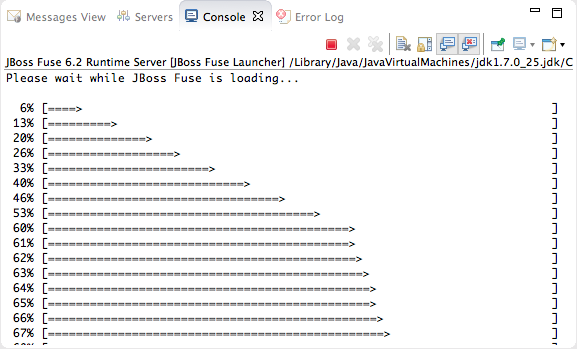
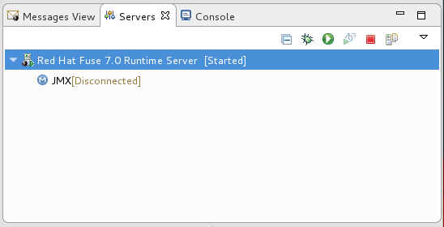
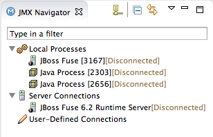

When you start a configured server, the tooling opens the server's remote management console in a Terminal panel. This allows you to easily manage the container while testing your application.
To start a server:
In the Servers panel, select the server you want to start.
Click
 .
.Console view opens and displays a message asking you to wait while the container is starting; for example:
![[Note]](imagesdb/note.png)
Note If you did not properly configure the user name and password for opening the remote console, a dialog opens asking you to enter the proper credentials. See Adding a Server.
After the container has started up, Terminal view opens to display the container's management console; for example:

The running server appears in Servers panel:
The running server also appears in JMX Navigator under Server Connections:
Note If the server is running on the same machine as the tooling, it also has an entry under Local Processes.